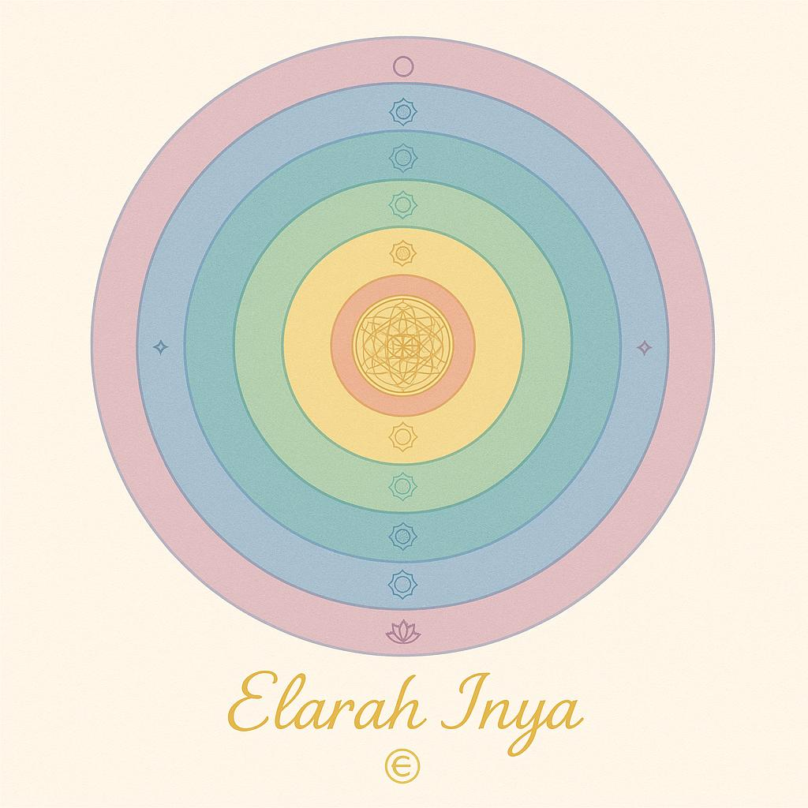

✧ Tratamientos Energéticos con Tablas Sagradas Canalizadas
Soy Elarah Inya, Sacerdotessa Multinazionale dell’Anima. Ofrezco tratamientos energéticos canalizados utilizando Tablas Sagradas creadas para la liberación kármica, la purificación áurica, la reunión del alma y la activación de chakra.
En cada sesión trabajo en profunda conexión con el Corazón Estelar, tus Registros Akáshicos y mis tablas canalizadas, para ayudarte a sanar, liberar bloqueos y recordar tu verdad interior.
✧ ¿Cómo funciona el tratamiento? ✧
🌿 Conexión energética con las Tablas Sagradas.
🌿 Canalización de información y mensajes.
🌿 Transmutación y reequilibrio del campo energético.
🌿 Uso de péndulo, cristales, sigilos y palabras de poder.
✨ Cada sesión es única y personalizada.
📌 Disponible de forma remota, con informe escrito o en audio.
Tabla para la Liberación de Heridas Kármicas
✨ Trabajo energético dirigido a disolver heridas profundas.
Identificación de la herida activa
Transmutación kármica
Sanación con sigilos y frases canalizadas
Cerrando el ciclo energético
🌸 Ideal para quienes sienten cargas kármicas o patrones repetitivos.
Tabla de Protección y Purificación Áurica
✨ Se utiliza para:
Transmutar larvas astrales.
Cerrar portales o fugas de energÁa
Fortalecer el aura
Sellar el campo con frecuencias de luz
🌸 Para aquellos que se sienten agotad@s o vulnerables energéticamente.
Tabla para la Reunión de los Fractales del Alma
✨ Consiste en recordar y reintegrar tus Fractales.
Lemurianos
Sirianos
Terrenales (vidas pasadas)
Futuros
Paralelos y Multidimensionales
Fractales heridos (sanacion)
🌸 Para quienes buscan plenitud y reconexión interior
Tabla de Lectura Áurica y Chakras

✨ Se realizan las siguientes actividades:
Lectura áurica con péndulo
Identificación de bloqueos
Armonización con los códigos de luz
Activación del flujo de energÁa
🌸 Para centrado, equilibrio y claridad interior.
Tabla de Activación de la Luz Interior
✨ Frase sagrada: "Soy Luz que Sana y Frecuencia que Despierta"
Attivazione energetica personalizzata
Sblocco di doni interiori
Allineamento con la missione d’anima
🌸 Para aquellos que desean recordar su verdadera esencia.
✧ Beneficios de trabajar con las Tablas Sagradas
🌟 Liberación kármica
🌟 Sanación emocional y álmica
🌟 Protección energética
🌟 Activación de códigos internos
🌟 Unidad e integración del Ser
🌟 Claridad espiritual y visión
✧ Modalidades ✧
✅ Sesiones a distancia (con informe en audio o escrito)
✅ Sesiones en vivo online (videollamada)
✅ Paquetes personalizados según tu proceso
✧ Cómo reservar ✧
EscrÁbeme en privado para coordinar un primer encuentro gratuito.
Creeremo insieme il tuo percorso su misura.
✨ Con amor y presencia,
Elarah Inya ∞


.jpg)